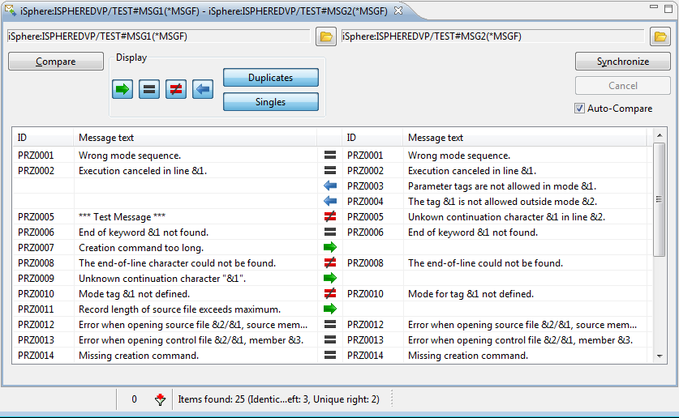
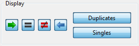
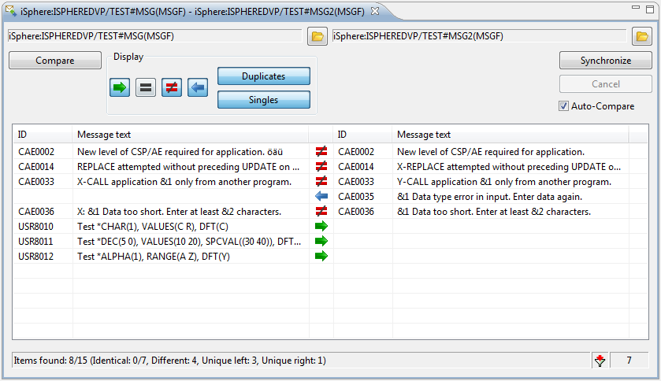
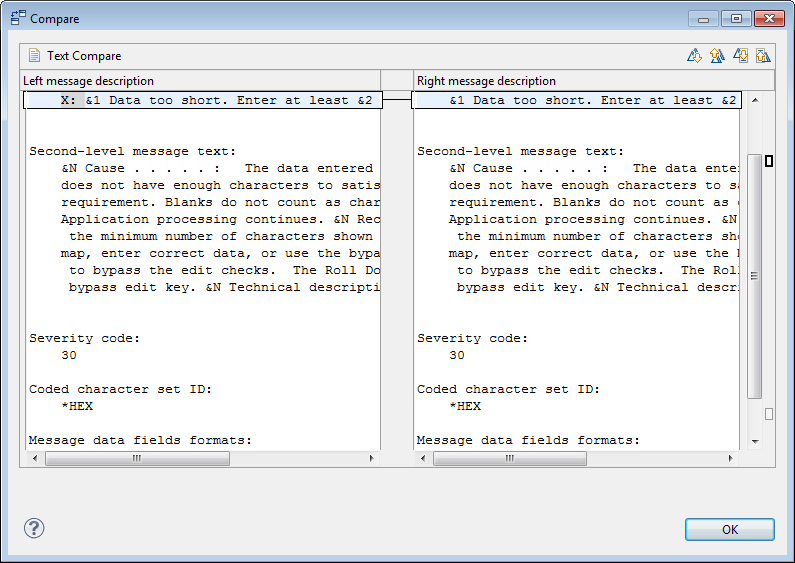

The Message File Compare Editor lets you compare, edit and synchronize the
messages descriptions of two given message files. The comparison very
clearly hightlights the differences. Here is a sample comparison:
The Message File Compare Editor lets you compare, edit and synchronize the
messages descriptions of two given message files. The comparison very
clearly hightlights the differences. Here is a sample comparison:

Select one, preferably two, message files from the RSE tree and from the context menu (right click) and select iSphere Message File Compare Editor. If you select only one message file, then you need to open the second file from the compare editor.
Once these is a message file in both sides, click [Compare] to start a comparison.
After the compare process finishes, note that icons between the two panes clearly display the differences.
Use the filter buttons in the "Display" section to filter the message descriptions:

A checked button indicates that the relevant entries are displayed. Uncheck one or more buttons to remove entries from the display. For example, unchecking [=] will remove from the display all message that are identical in both message files.

The status bar provides information on filtered entries. In the two message files compared above, "Identical: 0/7" means zero of the 7 identical messages are displayed. The "7" at the right shows that a total of 7 messages are not displayed.
Use the context (right click) menu on messages to set the left or right arrows in the direction you want synchronization to occur.
The complete context menu looks like this:

For example you may want to change the "not equal" action using "Select for copying <- (right to left)" or using "Select for copying -> (left to right)". You may want to use "Remove selection" on messages which are missing from one of the message files to avoid copying them to the other message file.
Note that you can also conveniently delete, edit and compare message descriptions using the context menu.
When you are satisfied that you have all the left and right arrows set correctly, click [Synchronize] to make the changes. Note: There is no "Undo" after you click [Synchronize].
| Note the "Auto-Compare" checkbox. If checked, the message files will be compared automatically after the files are synchronized. If not checked, changed table items which no longer match the filter options are not immediately removed from the table. The items are kept in the table to give you a chance to change them again, without changing the filter options. The status bar always show the correct values according to the filter options. You can toggle a filter option of your choice to update the table view. |
There are three ways to find differences by opening the compare dialog:

The length of a line in the side-by-side compare editor can be adjusted on the preferences page.
The following attributes are used for comparing and synchronizing message descriptions:
The Message File Compare Editor uses the MRGMSGF command for merging message descriptions.
The Message File Compare Editor uses the ADDMSGD and CHGMSGD commands for merging message descriptions.